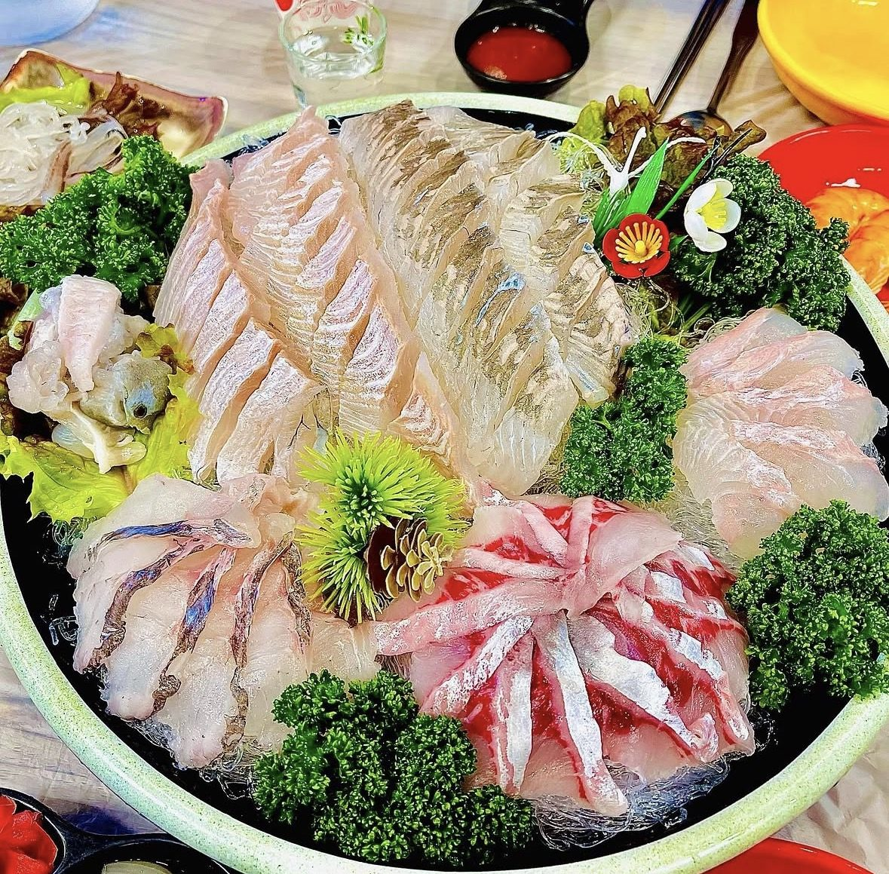
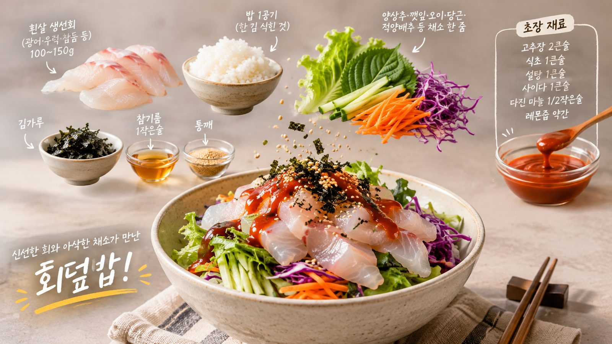

덮밥 · 20분 · 난이도 하
남은 모둠회로 만드는 회덮밥과 초장
속초 회센터에서 남겨 온 모둠회로 다음 날 차린 한 그릇. 마트 횟감 한 팩으로도 그대로 따라 할 수 있는 회덮밥.

- Time
- 20분
- Difficulty
- 하
- Serves
- 1인분
- Equipment
- 불 없이
속초에 갔다가 회센터에서 모둠회를 푸짐하게 먹었어요. 광어, 우럭, 참돔까지 한 접시에 담겨 나오는데, 둘이 먹기엔 양이 넉넉해서 남은 회를 포장해 왔어요. 다음 날 그 회로 회덮밥을 만들었는데, 이게 여행 마무리로 딱이었어요. 회를 사 와서 남았을 때, 또는 마트 횟감 한 팩으로도 그대로 따라 할 수 있는 레시피예요.
Méthode
- 초장 만들기초장 재료를 모두 섞어 냉장고에 10분 넣어둬요. 사이다를 넣으면 설탕이 잘 녹고 맛이 산뜻해져요.
- 채소 채 썰기채소는 모두 가늘게 채 썰어 찬물에 5분 담갔다가 물기를 바짝 털어요. 물기가 남으면 덮밥이 싱거워져요.
- 회 손질회는 한입 크기로 썰고, 하루 지난 회라면 키친타월로 표면 수분을 가볍게 눌러 닦아요.
- 그릇에 담기그릇에 밥을 담고 채소를 넉넉히 올린 뒤, 회를 가운데 둘러 담아요.
- 마무리김가루, 참기름, 통깨를 뿌리고 초장은 먹기 직전에 취향껏 넣어 비벼요.
Chef's Note — 원룸 팁
남은 회는 랩으로 공기를 차단해 냉장고 가장 안쪽에 두고, 다음 날 안에 먹는 게 좋아요.
밥이 뜨거우면 회가 익어버리니 꼭 한 김 식혀서 쓰세요.
바닷가에서 먹은 회도 좋았지만, 집에 와서 다시 한 그릇으로 즐기니 여행이 하루 더 늘어난 기분이었어요. 회가 남았을 때 버리지 말고 꼭 덮밥으로 만들어 보세요.
